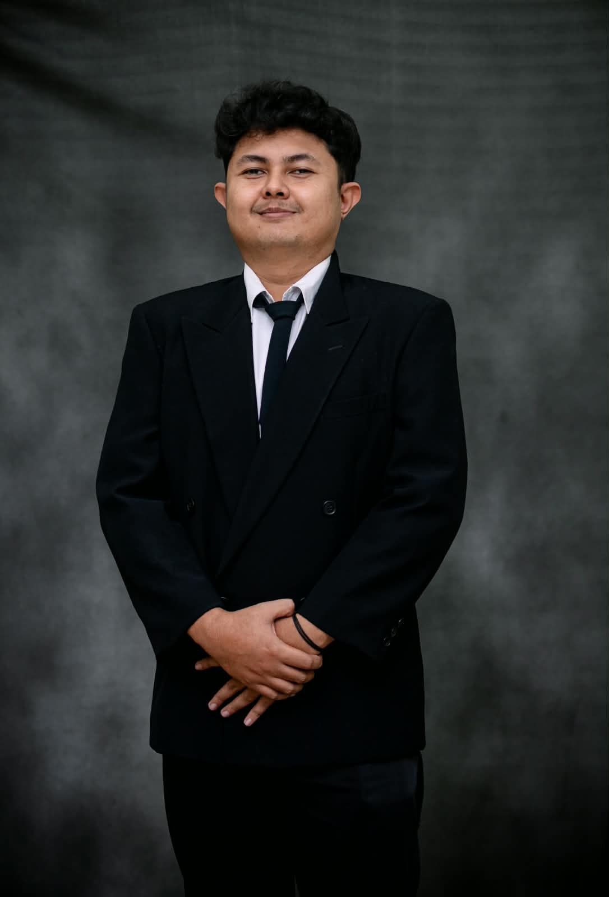
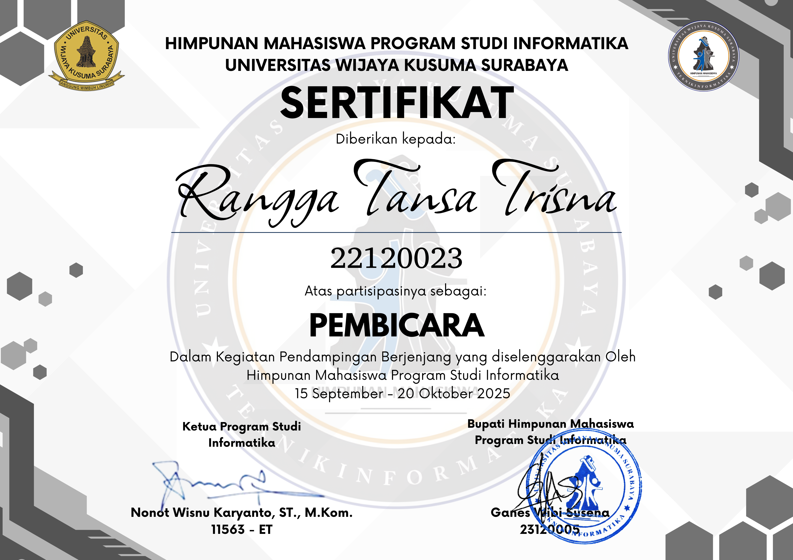

Rangga Tansa Trisna
S1 Informatika
Saya mahasiswa S1 Informatika di Universitas Wijaya Kusuma Surabaya, memiliki pengalaman dalam bidang Machine Learning, Basis Data, dan Pengembangan Web. Berpengalaman dalam menganalisis kebutuhan pengguna, kebutuhan sistem, dan pengambilan keputusan dalam menyelesaikan suatu permasalahan.
ranggatansa63@gmail.com
+62 821 3914 2801
Gresik, Indonesia
Pengalaman Kerja
Daily Worker Steward Shaburi Kintan Buffet Maret 2025 – April 2025
- Menjaga kebersihan, sanitasi serta ketersediaan seluruh peralatan makan dan alat masak agar operasional dapur berjalan dengan lancar.
Pendidikan
Universitas Wijaya Kusuma Surabaya • S1 Informatika 2022 – 2026 (IPK 3.56/4.00)
Mata kuliah terkait: Pemrograman Web, Basis Data, Machine Learning, Data Science, Interaksi Manusia-Komputer.
Pengalaman Organisasi
Anggota Departemen Penalaran • BEM Fakultas Teknik 2024 – 2025
- Mengkaji dan menelaah dalam bidang akademik maupun non akademik.
Ketua Komisi 1 Administrasi dan Akademik • DPM Fakultas Teknik 2025 – 2026
- Memastikan alur berjalannya administrasi organisasi mahasiswa dan urusan akademik mahasiswa berjalan dengan baik dan teratur.
Pengalaman Selama Kuliah
Asisten Laboratorium Informatika • Fakultas Teknik Universitas Wijaya Kusuma Surabaya 2024 – 2026
- Mengajar praktikum mata kuliah Basis Data, Jaringan Komputer, Basis Data Lanjut, Algoritma dan Struktur Data, Grafika Komputer, Keamanan Data dan Informasi, Internet Of Thinks, Pemrograman Web, Big Data.
- Membantu menyusun modul praktikum dan tugas mingguan.
- Mengurus Operasional Laboratorium
Peserta Program MBKM Kewirausahaan • Kampus Merdeka Oktober 2023 – November 2023
- Melakukan digitalisasi pemasaran umkm dan pengembangan bisnis pada usaha Katering Tansa Trisna.
Pembicara Materi Pemrograman Terstruktur • Pendampingan 2025 September 2025
- Memaparkan materi terkait pemrograman terstruktur pada kegiatan pendampingan yang diselenggarakan oleh Himpunan Mahasiswa Informatika 2025-2026
Bukti Proyek
Sistem Deteksi BISINDO Real-Time • Tugas Akhir
Agustus 2025 – Juli 2026- Membuat sistem yang bisa mendeteksi bahasa isyarat indonesia berupa pola tangan, yang terfokuskan pada huruf vokal saja dengan output dapat mentranslatekan pola tangan menjadi tampilan huruf.


Sertifikat


Sertifikat DPM Fakultas Teknik
Ketua Komisi 1 Administrasi dan Akademik 2025-2026
Organisasi Lihat Full

Keterampilan
Manajemen Waktu
Kerja Sama
Problem Solving
Pengolahan Data
Keterampilan Organisasi
Mampu Bekerja Tim
Git & GitHub
Python
HTML
ranggatansa63@gmail.com
+62 821 3914 2801
Gresik, ID
WhatsApp
2026 — Portofolio Rangga Tansa Trisna